Portfolio – Marceau CNUDDE
pour data-pixel
Voici mes projets les plus marquants avec des compétences en lien avec ce que vous recherchez.
Fine-tuning de RetinaNet – PyTorch (Détection d’objets)
- Chargement d’un réseau de neurones pré-entraîné
- Remplacement de la couche de détection pour l’adapter à un nouveau dataset
- Fine-tuning sur un jeu de données personnel
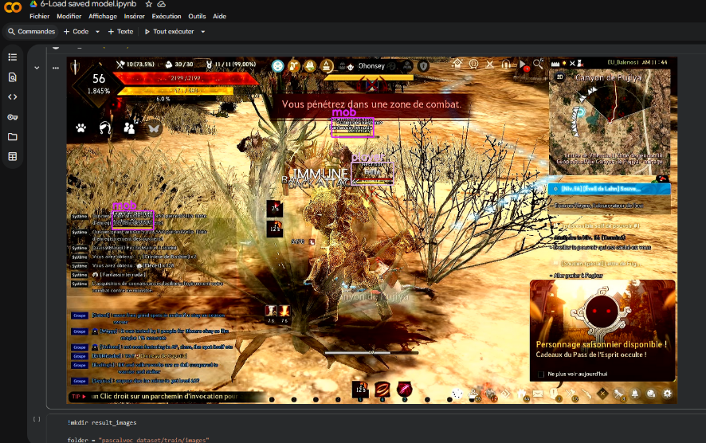
Bot de farm 100% vision – OpenCV
- 3 ordinateurs : PC du jeu vidéo + PC Bot + Raspberry Pi Zero (clavier/souris)
- Subprocess FFMPEG (décodage vidéo) > Threading (conversion numpy) pour une faible latence
- OpenCV : Edge detector + Line detector + Template matching
- Communication websocket (plus rapide que POST+Json)
- Gestion bit par bit de l’écriture des buffers USB (analyse avec Wireshark)
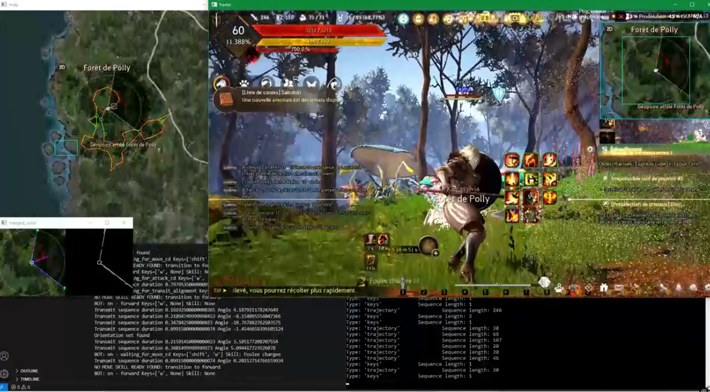
Lien Vidéo (3:39)
Robot avec Arduino / Raspberry Pi – Contrôle de Servo Moteur
- Projet en cours, objectif : location and mapping SLAM dans les prochaines semaines
- Architecture à 2 threads : serveur web Flask + contrôle servo moteur
- Bonus data-pixel : installation C++/QT et traduction du front-end vers QT via ChatGPT
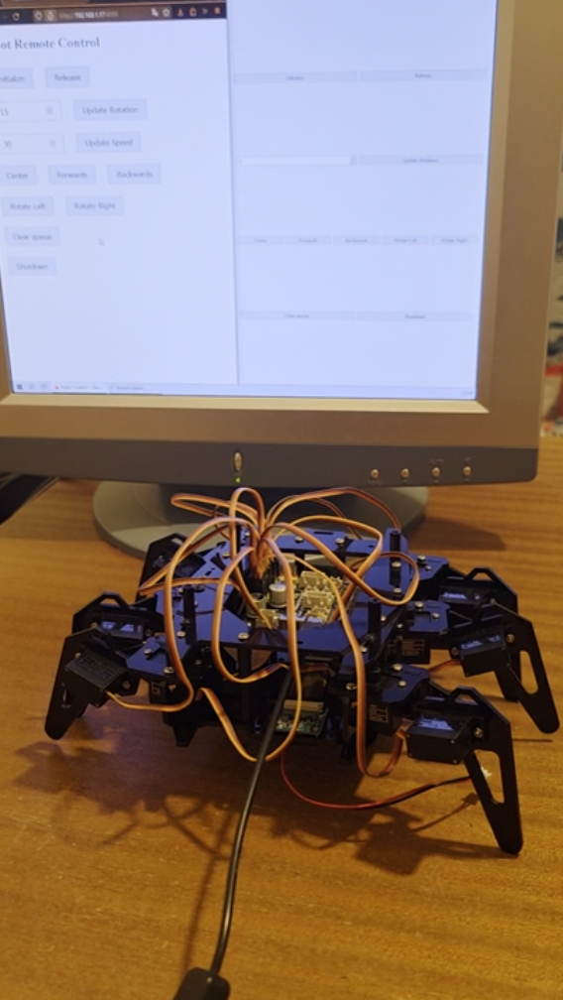
Lien Vidéo (0:27)
Transformation d’un objet physique (flûte traversière) en périphérique USB – PyTorch, OpenCV
- Conversion des mouvements et du son de la flûte en actions clavier/souris USB
- Détection des notes : Microphone → FFT → mapping vers clics/boutons clavier
- Détection d’orientation : Rotation verticale de la flûte → ConvNet → Edge Detector + Line Detector
→ Calcul en temps réel de l’angle de la flûte → déplacement horizontal de la souris
- Annotation des images (LabelBox), sélection de l’architecture du ConvNet
- Segmentation d'image pixel par pixel et entraînement du modèle
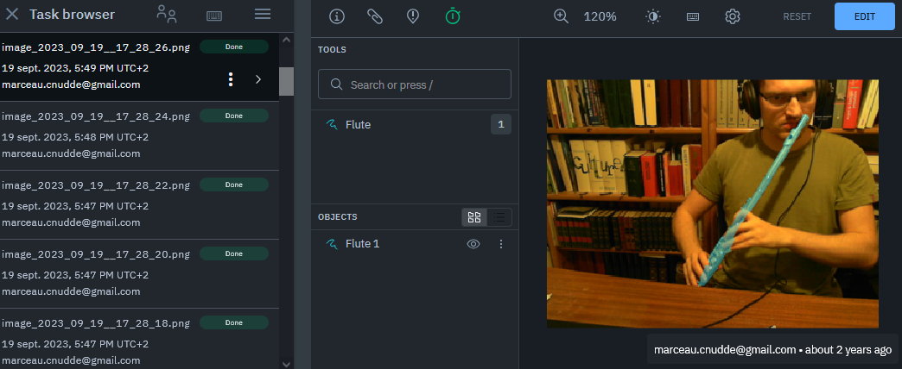
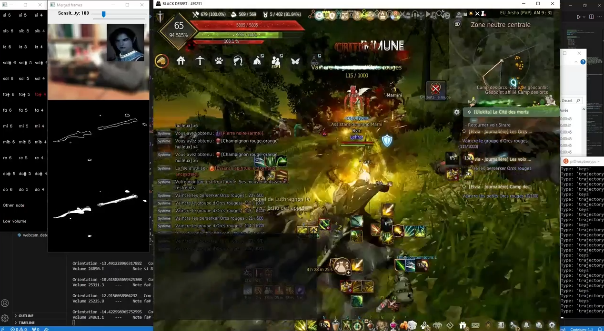
Lien Vidéo (1:29)
Bloqueur de publicités pour applications natives – Android
- Optimisation avancée du pipeline de rendu avec gestion des back-buffers pour améliorer la fluidité de l’affichage.
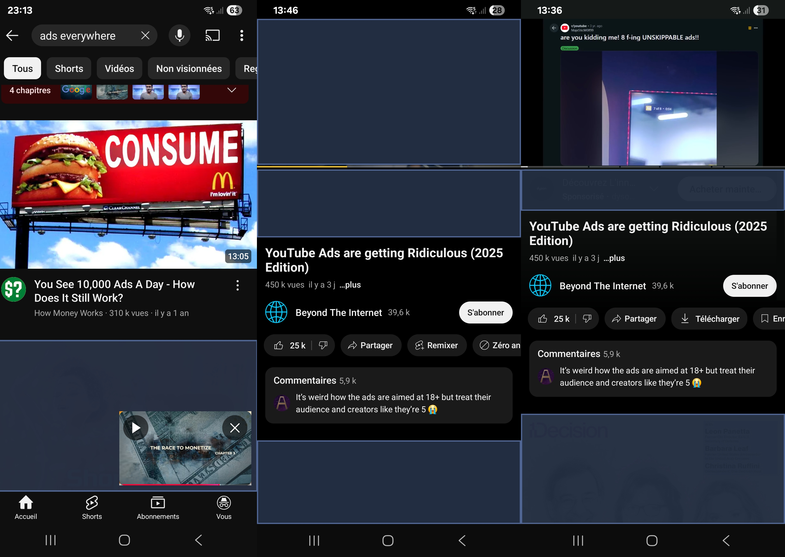
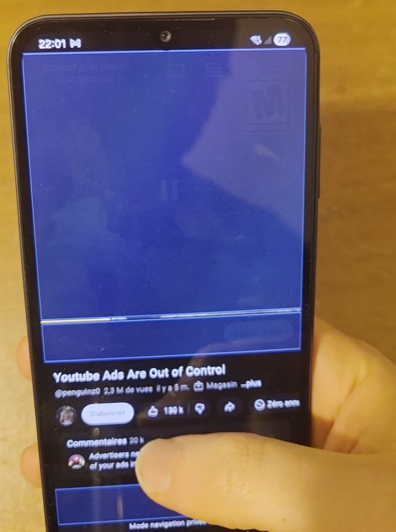
Lien Vidéo (0:32)
Enregistreur caméra + audio Bluetooth MIDI – Android, C++/Kotlin
- Implémentation complète du protocole Bluetooth MIDI en Kotlin
- Pont Java ↔ C++ via JNI pour un rendu audio en temps réel
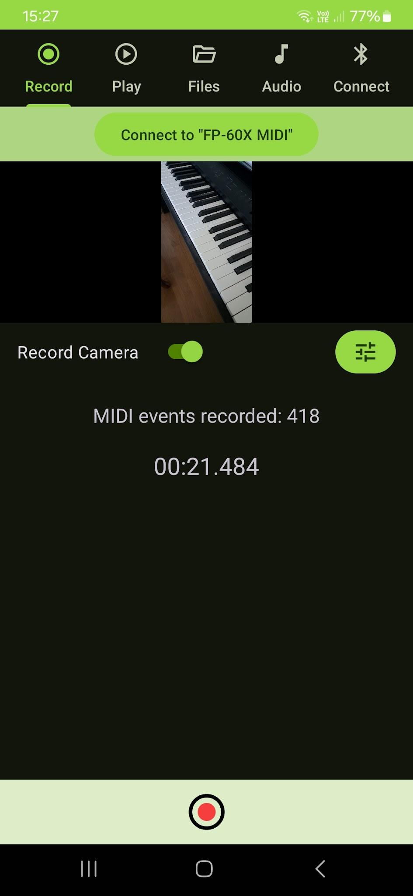
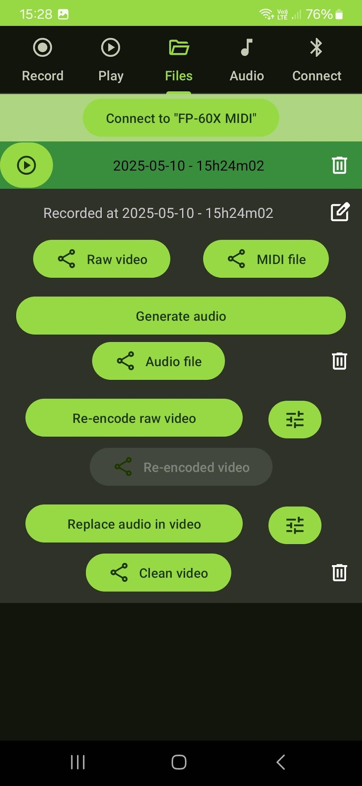
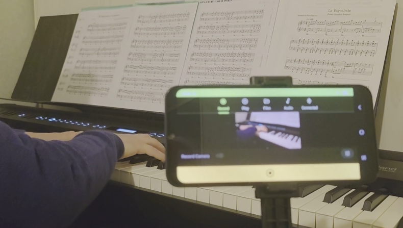
Lien Vidéo (0:41)
Fractale de Mandelbrot – C++/CUDA multithread
- Version CPU simple : 1–3 s par frame
- Version GPU optimisée : 100 ms par frame
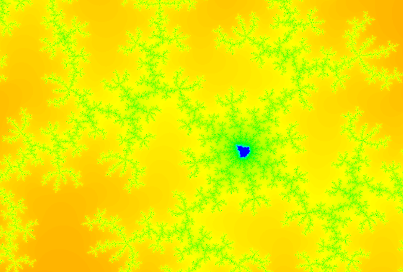
Lien Vidéo (0:20)
Moteur physique – C++ avec rendu VTK
- Gestion mémoire avec pointeurs intelligents (ramasse-miettes)
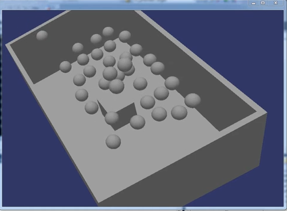
Lien Vidéo (0:04)